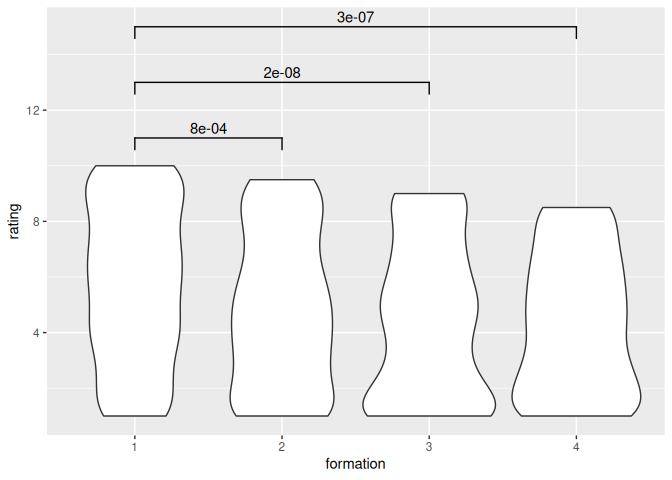
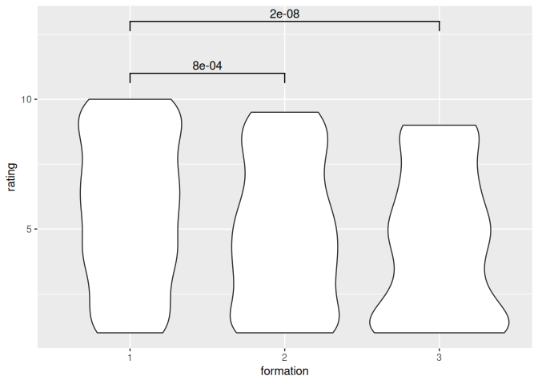

Are members exchangable in commercial music bands? A preregistration¶
- Authors: Richel J.C. Bilderbeek and Mark Adrianusovitch Wiering
Abstract¶
Some commercial music bands have had multiple formations,
where members are swapped by others.
Given that the goal of such a band is to
remain being a commercial success,
on can imagine that swapping members
has no effect.
In such commercial music bands,
are members exchangable?
In this preregistered research,
we answer this question
based on ratings of songs of a
famous Flemish band called K3,
which seems the perfect band to answer
this question with.
We found that K3 is/is_not a
perfect dataset and that there
is an/is no effect when
band members are swapped,
based on the perceived quality of the songs.
Introduction¶
Imagine a highly commercial boy/girl band, with all its songs being written by the same composers and being produced by the same producers. In such a setting, does the personality of the singers matter at all? Or, in other words, are all members exchangable with equally qualified artists?
There exist bands that have driven replaceability of its members to an extreme, such as AKB48 and Morning Musume, which have a rotational schedule. However, imagine a steady formation of singers that lasts several albums. Would these singers have an influence?
The ideal dataset would be a band that is highly commercial, has had produced many songs, has had multiple artist formations, while having the same group of composers and producers. If, in such a band, the songs of one formation get a significantly higher or lower ratings, than we can draw the -maybe unexpected- conclusion that, yes, the personality of the artists matter.
A band that is close to the ideal dataset seems to be the Flemish bubblegum pop girl band called K3, which is highly commercial, is currently in its fourth formation, has produced more than twenty CDs, written by mostly the same group of writers, produced by the same producers.
What are the different K3 formations?
These are the K3 formations,
as obtained by heyahmama::get_formations_wide():
| Formation | Members |
|---|---|
| 1 | Karen, Kristel,Kathleen |
| 2 | Josje, Karen, Kathleen |
| 3 | Hanne, Klaasje, Marthe |
| 4 | Hanne, Julia, Marthe |
Table 1: K3 formations
The members of K3 are -among others- selected for their hair color: each formation has a singer with red, black and blond hair. This branding is an indicator of K3 being commercial. However, each of the three singer formations may nevertheless have had an effect:
- The second formation had the sugar-sweet Kristel replaced by the more naughty (Dutch!) Josje. One may suspect that lyrics have changed along and have gotten naughtier too
- The third formation is a complete replacement from older singers to a new young formation of singers. One may suspect that lyrics have changed along and have gotten a new, young, fresh vibe.
- The fourth formation had Klaasje replaced by Julia. The reason behind this is that Klaasje wanted to focus on her classical career. Here, the melody of the songs may have changed to resemble the decrease in classical influences
One confounding factor that may cause the intrinsic K3 song quality to change is, simply, time: over time, song writers change, fans change and the way fans rate songs changes. This research will assume these factors of minor importance. To verify this assumptions, this research will investigate if the lyrics have remained constant in time.
This research investigates if a certain K3 formation resulted in significantly worse or better ratings. If -maybe unexpectedly- such a formation is found, this would give the implication that even in a highly commercial music band, the personality of the band members matters.
Hypothesis¶
- H1: the songs unique to each K3 formation have the same distribution in their ratings
- H2: the songs unique to each K3 formation have the same distribution in their ratings, for those songs that have the exact same group of text writers
- H3: lyrics have remained constant in time
Methods¶
Selection of songs¶
flowchart TD
all[Songs set A: all ? songs, H1]
unique_songs[Songs set B: all ? unique songs, H1]
same_composers[Songs set C: all ? songs with same composers, H1 and H2]
unique_songs_with_same_composers[Songs set D: all ? unique songs with same composers, H1 and H2]
all --> |Unique songs|unique_songs
unique_songs --> |Most prolific group of composers|unique_songs_with_same_composers
all --> |Most prolific group of composers| same_composers
same_composers --> |Unique songs| unique_songs_with_same_composersTo select the songs used in this research,
the R package heyahmama is used,
which is a package containing information about K3,
including functions to easily work with the data.
Songs set A is to use all K3 songs with lyrics. There is one song that has no lyrics and this song is useless to our hypotheses.
Which song does not have lyrics?
'Oya heya' currently is the only song without lyrics, as performed by Josje, Karen and Kristel.
However, K3 songs are re-used by other formations as well. This is no problem for our hypothesis: we assume the song is written for the first formation that performed it. One problem with this set, is that the singers have noticeably different voices, hence fans may rate the version with their favorite singer(s) higher.
Song set B is to use all K3 songs that are recorded for exactly one formation. This removes the effect of different ratings per song, as fans do have their favorite singers. One problem with this set is that it is noticeably smaller: K3 has a tendency to re-use songs and put these on a compilation CD or a second CD of a new release by a newer formation.
Songs set C and D are the songs that have been written by the most prolific group of composers. Behind all K3 songs have been 5 different groups of composers, with big overlap of the composers in each group. Songs set C comprises all songs written by the most prolific group of composers. Songs set D consists out of the songs that are unique and are written by the same composers. The main problem of these songs sets are, besides a reduced songs set, that the group of most prolific composers, has only written songs for the first three formations. This, however, works just as fine four our hypotheses.
Who is in the most prolific group of K3 composers?
These are Alain Vande Putte, Miguel Wiels and Peter Gillis,
as can be seen in the heyahmama 'Composers' vignette.
Obtaining fan ratings¶
We obtain ratings (which are values from 1 to 10, where 1 is worst and 10 is best) from two websites in which fans have rated K3 songs, which are https://github.com/richelbilderbeek/k3reviews and forum.popjustice.com. Ratings below one are set to one, where ratings above ten are set to ten.
Note that the authors has been involved heavily with one of these resources. However, the authors have never structurally analysed their own ratings before the experiment of this paper. It was the authors' familiarity with the work of K3 that made them realize that this band is an excellent dataset to answer the hypotheses.
How to obtain the ratings is dependent on possible co-author
This section is just a draft: a possible co-author has been contacted and he may suggest better ways to do so.
For forum.popjustice.com,
a webcrawler, [name of webcrawler],
was used to read though all posts of each thread. For this
website, each thread is connected to a song. If a post provides
a rating, the webcrawler collects (1) the song's title, (2) the song's rating,
(3) the name of person rating the song, (4) the post of the URL.
If a person has rated the same song multiple times, the last rating is used,
as this is the more informed rating.
For https://github.com/richelbilderbeek/k3reviews,
a webcrawler, [name of webcrawler],
was used to read though all songs. For this
website, each song is rated by zero, one or more people.
If a post has at least 1 rating, the webcrawler collects
(1) the song's title, (2) the song's rating,
(3) the name of person rating the song, (4) the post of the URL.
At this website, there are no duplicates.
The collected datasets can be downloaded from https://github.com/richelbilderbeek/paper_k3_ratings.
Statistical test to compare formations¶
We do not assume that the ratings follows a normal distribution, as we think it is likelier that fans rate a song with the more extreme ratings. Additionally, we know that ratings are not unique. Due to those statements, the Mann-Whitney U test is the correct statistical test to use, which tests if the distributions of ratings are the same. As the Mann-Whitney U test makes no assumptions on the underlying distributions, it will be rather conservative in determining if two distributions are different. This, on the other hand, does mean that if a difference is found, it is undeniable that different formations have an effect on perceived song quality.
A base value of alpha of 0.05 is used, as there has not been done any previous research on this. A Bonferroni correction is used to take multiple tests into consideration, which results in an alpha value of (0.05 / 6 =) 0.0083 for datasets A and B (which have 4 K3 formations) and an alpha value of (0.05 / 3 =) 0.017 for datasets C and D (which has 3 K3 formations).
If the p value if below that alpha value, the formations have a significantly different ratings distributions, meaning that the different group members have had an effect on the perceived quality of the songs. Else, we will conclude that the two formations have produced songs of equal perceived quality.
We compare the distributions between all combinations of ratings, as shown in tables 4a-4d.
How did you generate these tables?
By doing the actual analysis on simulated data.
The simulated data is created by this script
| Formation A | Formation B | p-value | Alpha value | Are distributions the same? |
|---|---|---|---|---|
| 1 | 2 | 0.0284633 | 0.0083333 | TRUE |
| 1 | 3 | 0.0000000 | 0.0083333 | FALSE |
| 1 | 4 | 0.0000000 | 0.0083333 | FALSE |
| 2 | 3 | 0.0068141 | 0.0083333 | FALSE |
| 2 | 4 | 0.0012854 | 0.0083333 | FALSE |
| 3 | 4 | 0.3212295 | 0.0083333 | TRUE |
Table 4a: overview of statistical tests between all formations for all songs
| Formation A | Formation B | p-value | Alpha value | Are distributions the same? |
|---|---|---|---|---|
| 1 | 2 | 0.0284633 | 0.0083333 | TRUE |
| 1 | 3 | 0.0000000 | 0.0083333 | FALSE |
| 1 | 4 | 0.0000000 | 0.0083333 | FALSE |
| 2 | 3 | 0.0068141 | 0.0083333 | FALSE |
| 2 | 4 | 0.0012854 | 0.0083333 | FALSE |
| 3 | 4 | 0.3212295 | 0.0083333 | TRUE |
Table 4b: overview of statistical tests between all formations for all songs performed uniquely by one formation
| Formation A | Formation B | p-value | Alpha value | Are distributions the same? |
|---|---|---|---|---|
| 1 | 2 | 0.0284633 | 0.0166667 | TRUE |
| 1 | 3 | 0.0000000 | 0.0166667 | FALSE |
| 2 | 3 | 0.0068141 | 0.0166667 | FALSE |
Table 4c: overview of statistical tests between all formations with the most prolific group of text writers
| Formation A | Formation B | p-value | Alpha value | Are distributions the same? |
|---|---|---|---|---|
| 1 | 2 | 0.0284633 | 0.0166667 | TRUE |
| 1 | 3 | 0.0000000 | 0.0166667 | FALSE |
| 2 | 3 | 0.0068141 | 0.0166667 | FALSE |
Table 4d: overview of statistical tests between all formations with the most prolific group of text writers for all songs performed uniquely by one formation
We also show the distributions of the ratings:
How did you generate these plots?
By doing the actual analysis on simulated data.
The simulated data is created by this script

Fig 1a: distributions of ratings for all songs
Fig 1b: distributions of ratings for all songs performed uniquely by one formation

Fig 1c: distributions of ratings, for all songs for all formations with the most prolific group of text writers
Fig 1d: distributions of ratings, for all formations with the most prolific group of text writers for all songs performed uniquely by one formation
Songs remain the same¶
To determine if all songs have remained the same, even though the composition of lyrics writer groups have sometimes changed, topic modelling will used.
- Use R package
stylo - Remove Dutch stop words
- Of each song, collect the 20 most used words and their frequency
- Code this is a 20D vector
- Cluster analysis
- Determine clusters
Pilot:
- Songs from other groups
Results¶
...
Conclusion¶
From our p-value we conclude that the groups are [equally/differently] enjoyable.
[If there is a difference, then:] We observe in figure 1 that the [first/second] group is more enjoyable.
Discussion¶
The dataset of ratings used has multiple factors that weaken it. First, users will not rate all songs. Second, users will rate different songs. Thirdly, users will have different distributions on their ratings. As the dataset is quite big, we expect these factors to average out any biases. However, it will make it harder to observe any significant effects.
This research used K3 as a dataset. The choice for this dataset is based on the the first author being familiar with their work. There are, however, other bands that could also be considered, such as The Nolans, with 9 formations and 23 studio albums could also be just as suitable. Repeating this same experiment for such a band would give more general insights in the effect of band member personality on fan's song ratings.
Bands such as AKB48 and Morning Musume, highly commercial bands that have had more formations than CD have been considered unsuitable for this research, as we estimate it is too likely that the personality of the band members have an effect on song ratings by fans. Performing this same experiment on those band and finding such an unexpected difference between formations would be quite an unexpected finding according to us.